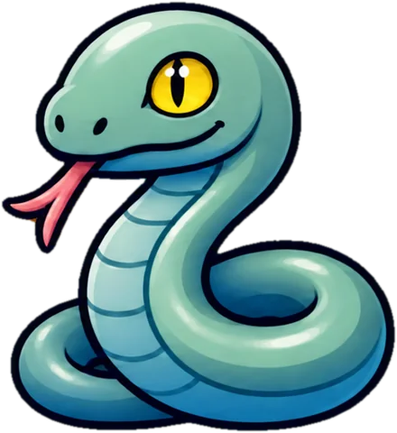

 WaterDragon
WaterDragonTap a stage to read its story.
Serpyx is a slim grey-blue serpent with small golden eyes and a forked red tongue it tastes the saltwater with constantly. Its smooth scales carry the pale grey-blue of shallow coastal rock and it moves in small curious S-curves just below the tide line. Tiny fins are beginning to form near its jaw, hinting at the dragon it will become. Children snorkelling in Coral Bay sometimes find one winding around their ankles like a living ribbon before darting away into the coral.
Field note: Serpyx tastes the water eight times a minute - researchers can measure tidal flow just by counting its tongue-flicks.
Coral Bay. Serpyx and its family are found in the Coral Bay. See everyone who lives there.
Share a Bond Food that matches its types to become friends. Serpyx loves:
A Bond Food is not a trick. It joins your spirit with the Kimuro's spirit, and only when it chooses you.
Print the Kimuro adventure packs: mazes, cards, a board game and Bond Mark medals.
See the printable packs